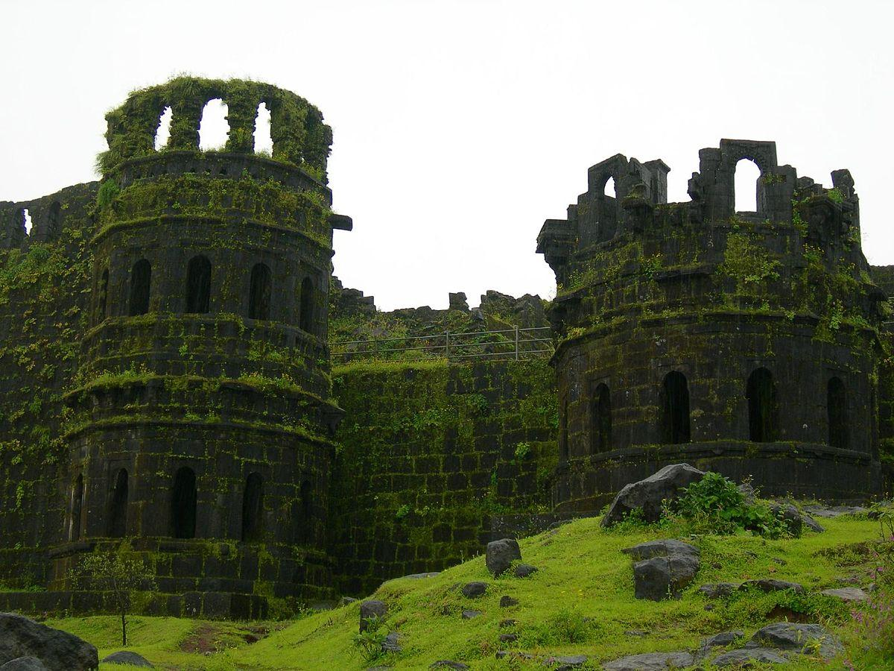
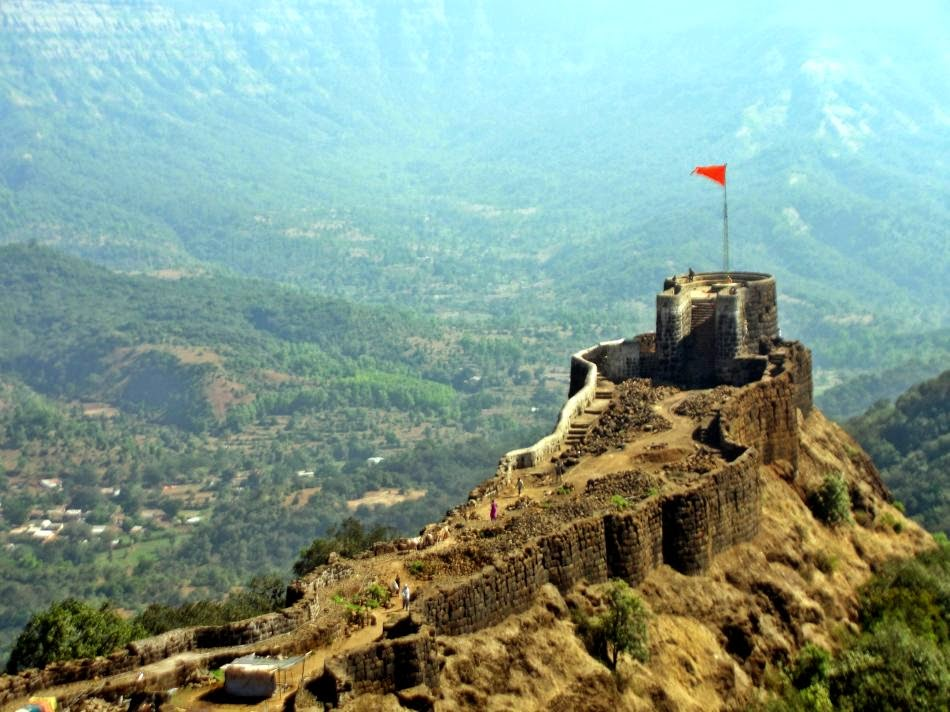

गडांचे साम्राज्य
Empire of Forts
महाराजांनी ३५० हून अधिक किल्ले जिंकले, बांधले आणि सुरक्षित केले. हे किल्ले म्हणजे स्वराज्याचा कणा होते — त्यांचे घर, त्यांचे बळ.
Maharaj captured, built and secured over 350 forts. These forts were the backbone of Swarajya — his home, his strength.

राजधानी ⛰ ८२० मीटर🏰 रायगड किल्ला
मराठा साम्राज्याची राजधानी · रायगड जिल्हा
रायगड म्हणजे महाराजांचं स्वप्न साकार झालेलं ठिकाण. येथेच ६ जून १६७४ रोजी राज्याभिषेक झाला आणि मराठा साम्राज्याची अधिकृत घोषणा झाली. महाराजांचे समाधीस्थळ आजही येथे आहे. रायगड हा प्रत्येक मराठ्याच्या हृदयाचा किल्ला आहे.
Raigad is where Maharaj's dream came alive. The grand coronation of 6 June 1674 happened here. His memorial samadhi stands here to this day. Raigad is the fort of every Maratha's heart.
 तानाजींचा गड
⛰ १२९२ मीटर
तानाजींचा गड
⛰ १२९२ मीटर
🦁 सिंहगड किल्ला
तानाजींचं बलिदान · पुणे जिल्हा
तानाजी मालुसरे यांनी रात्री घोरपडीच्या सहाय्याने हा किल्ला जिंकला आणि वीरगती प्राप्त केली. महाराज म्हणाले — "गड आला पण सिंह गेला!" हे शब्द आजही हृदयाला भिडतात.
Tanaji Malusare scaled this fort at night and attained martyrdom. Maharaj said — "The fort is won, but the lion is gone!" These words still pierce the heart today.

अफझलखान वध ⛰ १०८० मीटर⚔ प्रतापगड किल्ला
अफझलखान वधाची पुण्यभूमी · सातारा जिल्हा
१० नोव्हेंबर १६५९ रोजी येथे महाराजांनी वाघनखाने अफझलखानाचा वध केला. भवानी मातेचे मंदिर या किल्ल्यावर आहे. हा विजय स्वराज्यासाठी टर्निंग पॉइंट होता.
On 10 November 1659, Maharaj killed Afzal Khan here with tiger claws. The temple of Goddess Bhavani stands on this fort. This victory was a turning point for Swarajya.
🌟 शिवनेरी किल्ला
महाराजांची जन्मभूमी · जुन्नर, पुणे जिल्हा
१९ फेब्रुवारी १६३० रोजी या किल्ल्यावर शिवाजी महाराजांचा जन्म झाला. शिवाईदेवीचे मंदिर आणि जिजाबाई-शिवाजींचा सुंदर पुतळा येथे आहे. हा किल्ला म्हणजे स्वराज्याची पहाट आहे.
Shivaji Maharaj was born at this fort on 19 February 1630. The temple of Shivai Devi and a beautiful statue of Jijabai-Shivaji stand here. This fort is the dawn of Swarajya.